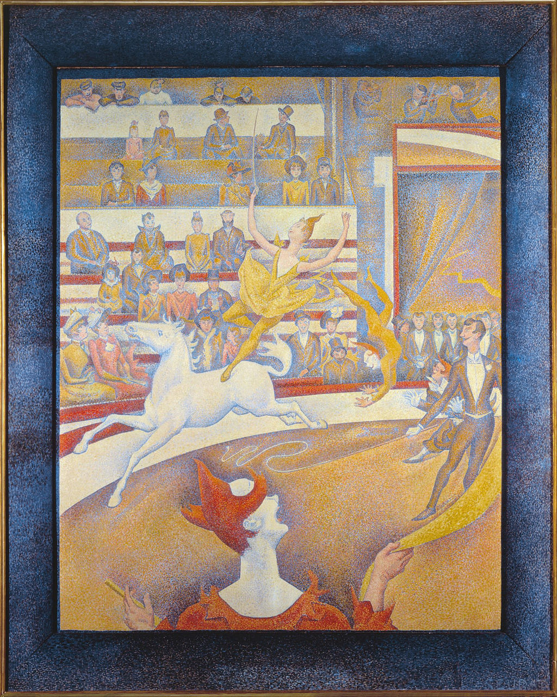

<head>
<meta charset="UTF-8" />
<meta name="keywords" content="drawing, painting" />
<meta name="description" content="drawings by Sunjy" />
<title>Sunjy</title>
<link rel="shortcut icon" type="image/x-icon" href="../../mImages/mCommon/favicon.ico" media="screen" />
<link rel="stylesheet" type="text/css" href="../../mCsses/mCommon/mCssA.css" />
<link rel="stylesheet" type="text/css" href="../../mCsses/mCommon/mCssB.css" />
<link rel="stylesheet" type="text/css" href="../../mCsses/mCommon/mCssC.css" />
<link rel="stylesheet" type="text/css" href="../../mCsses/mCommon/mCssD.css" />
<link rel="stylesheet" type="text/css" href="../../mCsses/mContent/mCssA.css" />
<link rel="stylesheet" type="text/css" href="../../mCsses/mContent/mCssB.css" />
<link rel="stylesheet" type="text/css" href="../../mCsses/mContent/mCssC.css" />
<link rel="stylesheet" type="text/css" href="../../mCsses/mContent/mCssD.css" />
</head>
<script type="text/javascript" src="../../mScripts/mContent/mContentAA.js" /></script>
<script type="text/javascript" src="../../mScripts/mContent/mContentAB.js" /></script>
<script type="text/javascript" src="../../mScripts/mContent/mContentAC.js" /></script>
<script type="text/javascript" src="../../mScripts/mContent/mContentAD.js" /></script>
<script type="text/javascript"></script> 
<script type="text/javascript">
document.write('<div class="mImgAbsolute"></div>');
/*
document.write('<p class="mFontSizeBColor" />From a white paper...</p>');
document.write('<table class="center"><tr><td>');
document.write('');
document.write('</td></tr></table>');
*/
</script>


<script type="text/javascript">
document.write('<p class="mFontSizeBColor" />The Circus</p>');
document.write('<p class="mFontSizeSColor" />“The Circus” by Georges Seurat depicts a female circus performer standing on a white horse plus various other acts at a Paris circus of the late 1890s.<br><br>At that time, circuses and entertainment spectacles had become a favored subject for artists portraying modern life.<br><br>Seurat’s painting is divided into two parts, with the circus artists occupying the lower right, characterized by curves and spirals creating a sense of movement, and the audience filling the upper left, confined to rows of benches.<br><br>The audience shows the distinctions between social classes sitting in rows. In the front rows sit the well-dressed wealth classes and in the gallery at the back stand the poorer classes.<br><br>The white-faced clown creates a sense of space in the foreground and the tiers of bleachers. A pair of clowns are also tumbling behind the ringmaster.<br><br>The circus was a popular entertainment in Paris and was depicted in the 1880s by other artists such as Renoir, Degas, and Toulouse-Lautrec. <br><br>Seurat used a Neo-Impressionist Divisionist style, with pointillist dots creating a sense of different colors. The work is dominated by white and the three primary colors, mainly red and yellow, with blue shading.<br><br>A deeper blue border painted around the edge of the canvas, merging into a flat frame in the same shade of blue.<br><br>Seurat was making use of recent theories on the emotional and symbolic meaning of lines and colors, and the theoretical works on complementary colors. <br><br>Japanese prints and the latest trends in graphic works and posters also influenced him.<br><br>“The Circus” was Georges Seurat’s last painting, made in a Neo-Impressionist style, it remained unfinished at his death in 1891.<br><br>Although incomplete, this painting captures the emotion and movement of a circus scene. The clown at the front stands out with white make-up against scarlet hair and dress.<br><br>The smartly dressed ringmaster to the right is placed just in front of clowns. An acrobat is jumping in front of him.<br><br>The focal point of the piece, however, is the young woman in yellow who is boldly riding the white horse. The frame of this painting was also created by Georges Seurat to complement the picture.<br><br>Despite being unfinished, the work was exhibited in the 7th Salon des Independents. Still, it drew a great deal of controversy due to its similarity to posters by French painter Jules Chéret.<br><br>Seurat died of what is speculated to have been diphtheria a few days after the Salon opened. Seurat died trying to create a symbiosis between artistic creation and scientific analysis, a subject of widespread interest during his time.<br></p>');
document.write('<table class="center" /><tr><td>');
document.write('<br>At that time, circuses and entertainment spectacles had become a favored subject for artists portraying modern life.<br><br>Seurat’s painting is divided into two parts, with the circus artists occupying the lower right, characterized by curves and spirals creating a sense of movement, and the audience filling the upper left, confined to rows of benches.<br><br>The audience shows the distinctions between social classes sitting in rows. In the front rows sit the well-dressed wealth classes and in the gallery at the back stand the poorer classes.<br><br>The white-faced clown creates a sense of space in the foreground and the tiers of bleachers. A pair of clowns are also tumbling behind the ringmaster.<br><br>The circus was a popular entertainment in Paris and was depicted in the 1880s by other artists such as Renoir, Degas, and Toulouse-Lautrec. <br><br>Seurat used a Neo-Impressionist Divisionist style, with pointillist dots creating a sense of different colors. The work is dominated by white and the three primary colors, mainly red and yellow, with blue shading.<br><br>A deeper blue border painted around the edge of the canvas, merging into a flat frame in the same shade of blue.<br><br>Seurat was making use of recent theories on the emotional and symbolic meaning of lines and colors, and the theoretical works on complementary colors. <br><br>Japanese prints and the latest trends in graphic works and posters also influenced him.<br><br>“The Circus” was Georges Seurat’s last painting, made in a Neo-Impressionist style, it remained unfinished at his death in 1891.<br><br>Although incomplete, this painting captures the emotion and movement of a circus scene. The clown at the front stands out with white make-up against scarlet hair and dress.<br><br>The smartly dressed ringmaster to the right is placed just in front of clowns. An acrobat is jumping in front of him.<br><br>The focal point of the piece, however, is the young woman in yellow who is boldly riding the white horse. The frame of this painting was also created by Georges Seurat to complement the picture.<br><br>Despite being unfinished, the work was exhibited in the 7th Salon des Independents. Still, it drew a great deal of controversy due to its similarity to posters by French painter Jules Chéret.<br><br>Seurat died of what is speculated to have been diphtheria a few days after the Salon opened. Seurat died trying to create a symbiosis between artistic creation and scientific analysis, a subject of widespread interest during his time.<br>" />');
document.write('</td></tr></table>');
</script>


